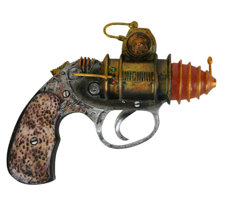

The Boot Blaster is your go to gun when you're in polite settings but the Cavalry is far away. You need deep concealment. It's small enough to conceal in an overcoat or on your belt under an overcoat. It might even fit in your boot! But when evil geniuses or mad scientists attack with their spawn zombies, you will be prepared. After all, you chose to live an adventurous life! Such a life has its dangers. So be prepared with The Boot Blaster! (Batteries not included. $75.95)
The Vaporizor is what you take if you KNOW you're going into Harm's Way. Chasing down vampires or an oversized Hell Child? Take the Vaporizor. Mechanical killing machines or swarms of explosive pets? Take the Vaporizor. Plenty of ammo. Seldom needs reloading. Lots of battery power on hand. And even Frankenstein will stop what he's doing after getting hit by a blast from it. Guaranteed stopping power! (Batteries not included. $89.95)